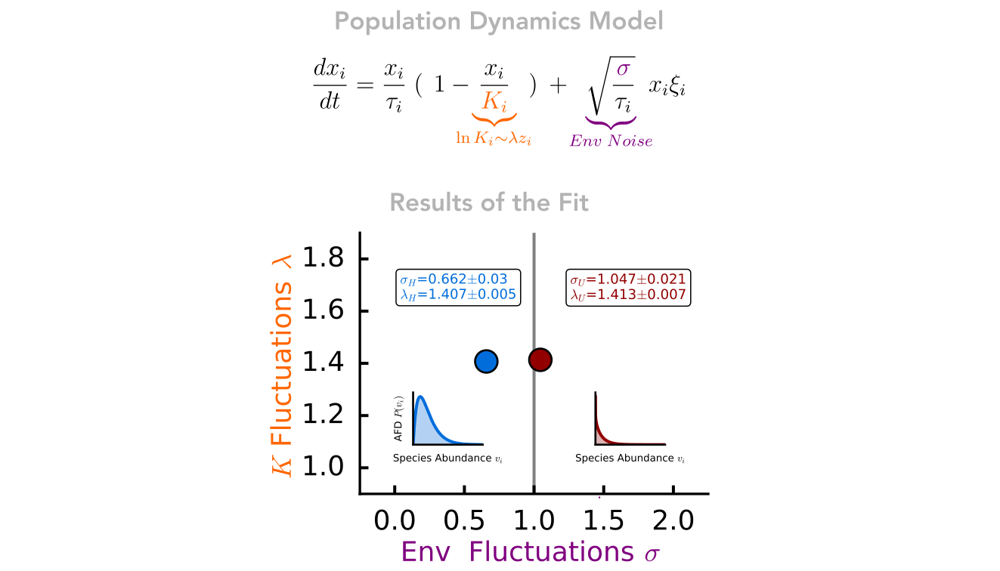

Abstract
The Human Gut Microbiome (HGM) harbors a huge diversity in terms of species. Recent work has shown the existence of macroecological laws describing the variation and diversity in microbial communities using 16s OTU data. Here we investigate whether such patterns could be used to discriminate between different models of population dynamics, and characterize gut microbiomes in healthy vs. disease states. In this work, by using shotgun metagenomics data, we first discuss how a simple scaling relation (Taylor's law) plays a crucial role when building theoretical models for the gut microbiome. Moving from recent results, we then introduce the Symmetric Schlömlich Model, which is related to a widely used prior for relative species abundance (RSA), i.e. the Dirichlet Model. We show that the RSA can be obtained by constraining the solution of the Stochastic Logistic Growth Model, thus endowing all parameters with a clear ecological interpretation. Finally, we characterize the gut microbiomes from an ecological viewpoint, and compare how different models describe the emergent gut microbiome patterns in healthy and disease conditions
Synopsis and Results
In this paper, we have assembled shotgun metagenomic data from three different studies to create a highly curated dataset of the gut microbiome. under both physiological and pathophysiological conditions. We processed and analysed these data using bioinformatic tools (quality control, host decontamination and sequence alignment). and obtained estimates of the relative abundance of species for each individual. After checking that previously observed emergent patterns (some kind of mean or marginal statistic) were present in our dataset, we asked ourselves what kind of model could could generate compatible observations. Such patterns are thought to contain valuable biological information that can be used to to understand the mechanisms that lead to gastrointestinal diseases that affect millions of people around the world, such as Crohn's Disease ulcerative colitis and inflammatory bowel syndrome.
From a modelling point of view, the existence of such regularities allowed us to drastically reduce the number of the number of parameters from approximately the same number of species in the dataset (about 4000) to just 2! Such parameters have a clear ecological interpretation: we have a parameter which describes how heterogeneous the average populations of species are, and another which tells us how strongly these species are coupled to the environment (availability of resources, temperature, pH, etc.). Based on population dynamics arguments, we have developed a flexible generative model that incorporates other widely used models (e.g. Multinomial Dirichlet). Considering some relevant boundary cases, we fitted it to the data. From a modelling point of view, the existence of such regularities allowed us to drastically reduce the number of the number of parameters from approximately the same number of species in the dataset (about 4000) to just 2! Such parameters have a clear ecological interpretation: we have a parameter which describes how heterogeneous the average populations of species are, and another which tells us how strongly these species are coupled to the environment (availability of resources, temperature, pH, etc.).
Our findings are twofold. The first is that only a few key ingredients (logistic growth and environmental noise) need to be specified in the population dynamics model. to capture most of the ecological patterns in the data: the particular parameterisation and other constraints on the model lead to smaller corrections (see presence/absence patterns). (such presence/absence patterns), which can help to distinguish which of these corrections should be included in further developments. Second, and more importantly, we found that the two fitted parameters closely reflect the physiological differences between healthy and diseased microbiomes. diseased microbiomes. We find that deterministic heterogeneities in population dynamics are not as informative. However, the strength of stochastic environmental fluctuations is twice as strong in diseased microbiomes. This quantitative difference is also reflected at the qualitative level, leading to population dynamics with many extinctions.
These findings suggest that the factors that shape the dynamics of the gut microbiome should be studied by looking at population fluctuations, rather than their averages. To do this, we will need larger 'omic datasets and a more general theory of such fluctuations.
Preprint Link
Read the full text on BioRxiv.
Code
All the code relative to the can be found at publication, and for the metagenomic analysis can be fonud on my github page.